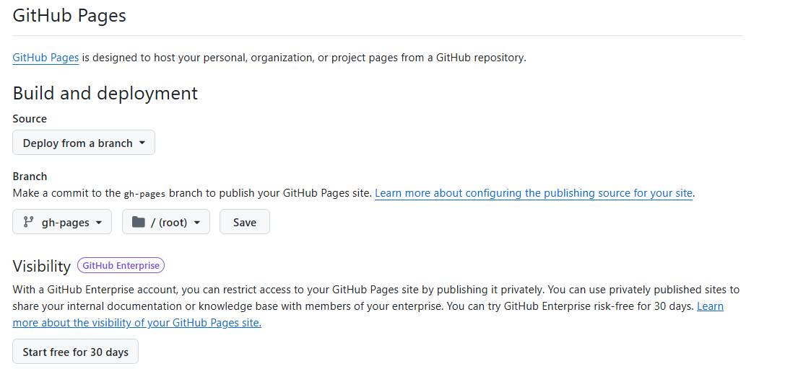
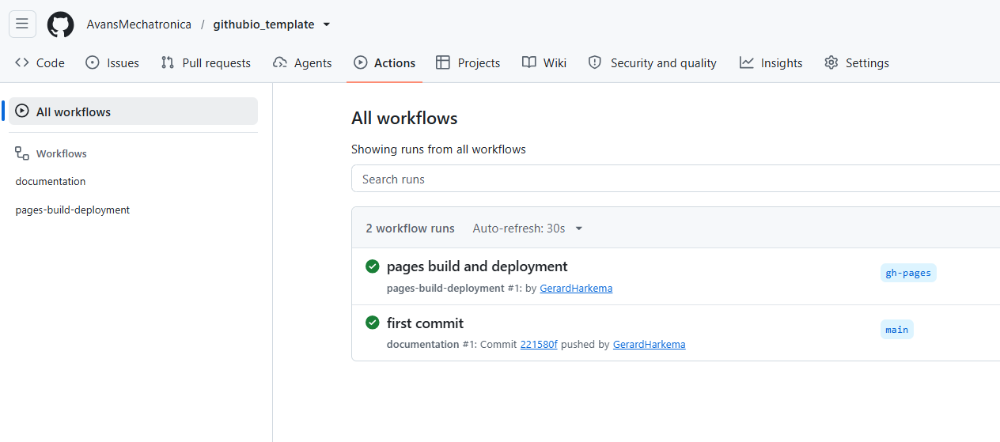

Documentatie bijwerken en publiceren
Deze documentatie wordt gemaakt met Sphinx en
MyST, zodat de pagina’s in Markdown
geschreven kunnen worden. Bij elke git push naar main bouwt een GitHub Action
de site en zet die op GitHub Pages.
Structuur
documentation/
├── conf.py Sphinx-configuratie (projectnaam, thema, extensies)
├── index.rst startpagina en inhoudsopgave
├── requirements.txt Python-pakketten voor het bouwen
├── documentation/ de pagina's (Markdown)
├── images/ afbeeldingen
└── _static/ logo en statische bestanden
.github/workflows/documentation.yml GitHub Action die bouwt en publiceert
Een nieuwe pagina voeg je toe door een .md-bestand in documentation/documentation/
te zetten en het op te nemen in de toctree van index.rst.
Lokaal bouwen
Vanuit de hoofdmap van de repository:
python -m venv .venv
.venv\Scripts\Activate.ps1
pip install -r documentation/requirements.txt
sphinx-build documentation _build
start _build\index.html
python3 -m venv .venv
source .venv/bin/activate
pip install -r documentation/requirements.txt
sphinx-build documentation _build
open _build/index.html
Publiceren op GitHub Pages
Commit en push je wijzigingen naar
main:
git add .
git commit -m "Documentatie bijgewerkt"
git push
De workflow documentation bouwt de site en zet het resultaat op de branch
gh-pages.Stel eenmalig in de repository-instellingen onder Pages de bron in op de branch
gh-pages(map/ (root)) en klik op Save.

Daarna staat de documentatie op https://<gebruiker>.github.io/<repository>/.
Valkuilen
Controleer in het tabblad Actions of de workflow slaagt. Een fout in een pagina (bijvoorbeeld een ontbrekend bestand in de
toctree) laat de build mislukken.De workflow heeft schrijfrechten nodig (
permissions: contents: write) om de branchgh-pagesbij te werken.Publiceren gebeurt alleen bij een push naar
main; bij een pull request wordt alleen gebouwd.
